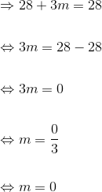
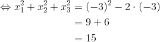

Exerciții cu polinoame rezolvate
- Această problemă a fost dată în sesiunea iunie-iulie a anului 2013, pentru profilul mate - info, Subiectul II, exercițiul 2.
Bacalaureat Matematică 2013 | Mate - Info | Sesiunea iunie-iulie | Subiectul II
Se consideră  rădăcinile complexe ale polinomului
rădăcinile complexe ale polinomului  , unde
, unde  este număr real.
este număr real.
- Pentru
 , arătați că
, arătați că  .
. - Determinați numărul real pentru care rădăcinile polinomului
 verifică relația
verifică relația  .
. - Dacă
 , arătați că se divide cu
, arătați că se divide cu  .
.
- Dacă , atunci avem
 .
.
Calculăm  .
.


- Folosim relațiile lui Viète:

Dar . Atunci, avem că:
Cum  este o rădăcină a polinomului , atunci .
este o rădăcină a polinomului , atunci .
- Știm că
 .
.
Din relațiile lui Viète avem:
Atunci, obținem:
Dar


Rezolvăm ecuația  .
.


- Această problemă a fost dată în sesiunea specială a anului 2014, pentru profilul mate - info, Subiectul II, exercițiul 2.
Bacalaureat Matematică 2014 | Mate - Info | Sesiunea specială | Subiectul II
Se consideră polinomul  .
.
- Calculați
 .
. - Determinați câtul și restul împărțirii polinomului
 la
la  .
. - Arătați că
 știind că
știind că  ,
,  și
și  sunt rădăcinile lui .
sunt rădăcinile lui .
- Calculăm .

- Împărțim polinomului la .

Câtul este  .
.
Restul este  .
.
- Folosim relațiile lui Viète.


Atunci:

- Această problemă a fost dată în sesiunea august-septembrie a anului 2015, pentru profilul mate - info, Subiectul II, exercițiul 2.
Bacalaureat Matematică 2015 | Mate - Info | Sesiunea august-septembrie | Subiectul II
Se consideră polinomul  unde
unde  este număr real.
este număr real.
- Arătați că

- Pentru
 arătați că
arătați că  unde
unde  și
și  sunt rădăcinile polinomului
sunt rădăcinile polinomului 
- Determinați numărul natural prim
 știind că polinomul
știind că polinomul  are o rădăcină întreagă.
are o rădăcină întreagă.
- Calculăm


- Pentru polinomul devine

Pentru a rezolva acest subpunct, vom folosi relațiile lui Viète:

Calculăm  deoarece ne va interveni ulterior în calcule.
deoarece ne va interveni ulterior în calcule.

Calculăm  folosind următoarea formulă:
folosind următoarea formulă:


- Polinomul
 are o rădăcină întreagă, putem scrie că:
are o rădăcină întreagă, putem scrie că:

Atunci


Deoarece este număr natural prim, ne rezultă că:

Cum  nu ne convine, deoarece
nu ne convine, deoarece  nu ar mai fi număr natural prim.
nu ar mai fi număr natural prim.
Atunci, doar soluția  este cea care ne convine.
este cea care ne convine.
Astfel, numărul prim căutat este:
Numărul prim găsit, care să verifice condiția dată, este 
- Această problemă a fost dată în sesiunea iunie-iulie a anului 2012, pentru profilele științele naturii și tehnologic, Subiectul II, exercițiul 2.
În ![\mathbb{R}\big[X\big]](https://media.liceunet.ro/files/webbooks/images/257/equations/zU0HsqCwl1hFj-pC8RpvBA==.gif) se consideră polinomul
se consideră polinomul  cu rădăcinile
cu rădăcinile 
- Arătați că polinomul
 se divide cu
se divide cu 
- Calculați

- Verificați dacă

- Se pune condiţia ca R, restul împărţirii polinomului la
 să fie 0. Cum polinomul este de tipul
să fie 0. Cum polinomul este de tipul  cu
cu  vom calcula restul pe baza Teoremei restului, adică:
vom calcula restul pe baza Teoremei restului, adică:
Cum , ne rezulă că polinomul se divide cu
Verificare:

- Pentru a rezolva acest subpunct ne folosim de relațiile lui Viète:
Atunci:


- Verificăm dacă


 unde
unde  sunt rădăciniile polinomului .
sunt rădăciniile polinomului .
- Această problemă a fost dată în sesiunea august - septembrie a anului 2013, pentru profilul științele naturii , Subiectul II, exercițiul 2.
Bacalaureat Matematică 2013 | Științele naturii | Sesiunea august - septembrie | Subiectul II
Se consideră  și
și  rădăcinile complexe ale polinomului
rădăcinile complexe ale polinomului  , unde
, unde  este un număr real.
este un număr real.
- Arătați că
 este divizibil cu
este divizibil cu  , pentru orice număr real .
, pentru orice număr real . - Determinați numărul real pentru care
 .
. - Determinați valorile reale ale lui știind că
 .
.
- Verificăm dacă restul împărțirii polinomului la este zero.

Cum polinomul este de tipul  , avem de fapt soluția polinomului împărțitor.
, avem de fapt soluția polinomului împărțitor.
Pentru a arăta că este divizibil cu , pentru orice număr real , calculăm, conform Teoremei restului,  .
.
Cum rezultă că divide polinomul .
- Pentru a rezolva acest subpunct ne folosim de relațiile lui Viète:
Atunci:
Numărul real pentru care este 
- De la subpunctul a. avem o rădăcină:

Avem relația  .
.
Trecând la modul ne rezultă că:
Soluțiile găsite verifică cerința.
- Această problemă a fost dată în sesiunea august - septembrie a anului 2013, pentru profilul științele naturii , Subiectul II, exercițiul 2.
Bacalaureat Matematică 2015 | Științele naturii | Sesiunea iunie - iulie | Subiectul II
Se consideră polinomul  , unde
, unde  este număr real.
este număr real.
- Arătați că
 .
. - Determinați numărul real , știind că restul împărțirii lui
 la polinomul
la polinomul  este egal cu
este egal cu  .
. - Demonstrați că
 , pentru orice număr real , unde
, pentru orice număr real , unde  ,
,  și
și  sunt rădăcinile polinomului .
sunt rădăcinile polinomului .
- Calculăm
 .
.
 .
.


- Folosim relațiile lui Viete.
Folosim formula:

Înlocuim

și obținem:
- Această problemă a fost dată în sesiunea august - septembrie a anului 2013, pentru profilul tehnologic, Subiectul II, exercițiul 2.
Bacalaureat Matematică 2013 | Tehnologic | Sesiunea august - septembrie | Subiectul II
Se consideră polinomul 
- Calculați

- Determinați câtul și restul împărțirii polinomului
 la
la 
- Calculați
 , unde
, unde  sunt rădăcinile polinomului .
sunt rădăcinile polinomului .
- Calculăm

- Calculăm câtul și restul împărțirii polinomului la

Câtul împărțirii polinomului la  este
este  , iar restul împărțirii polinomului la este
, iar restul împărțirii polinomului la este 
- Pentru a rezolva acest subpunct ne folosim de relațiile lui Viète:
Atunci:

- Această problemă a fost dată în sesiunea august - septembrie a anului 2013, pentru profilul tehnologic, Subiectul II, exercițiul 2.
Bacalaureat Matematică 2014 | Tehnologic | Sesiunea august - septembrie | Subiectul II
Se consideră polinomul  .
.
- Arătați că
 .
. - Determinați câtul și restul împărțirii polinomului
 prin
prin  .
. - Arătați că
 știind că
știind că  ,
,  și
și  sunt rădăcinile polinomului .
sunt rădăcinile polinomului .
- Calculăm
 .
.


- Împărțim polinomul prin .

Câtul împărțirii este  , iar restul este
, iar restul este  .
.
- Folosim relațiile lui Viete.


- Această problemă a fost dată în sesiunea specială a anului 2015, pentru profilul tehnologic, Subiectul II, exercițiul 2.
Bacalaureat Matematică 2015 | Tehnologic | Sesiunea specială | Subiectul II
Se consideră polinomul  .
.
- Arătați că
 .
. - Determinați câtul și restul împărțirii polinomului
 la polinomul
la polinomul  .
. - Demonstrați că
 , unde
, unde  ,
,  și
și  sunt rădăcinile polinomului
sunt rădăcinile polinomului  .
.
- Trebuie să arătăm că .

- Împărțim polinomul
 la polinomul .
la polinomul .

Câtul obținut este  , iar restul este
, iar restul este  .
.
- Utilizăm relațiile lui Viète.


Pentru a vedea mai multe exemple de probleme cu polinoame rezolvate, poți accesa unul din eBook-urile următoare, Subiectul II, exercițiul 2:
Bacalaureat Matematică 2012 | Mate - Info | Sesiunea august - septembrie | Subiectul II
Bacalaureat Matematică 2013 | Mate - Info | Model de subiect | Subiectul II
Bacalaureat Matematică 2013 | Mate - Info | Sesiunea specială | Subiectul II
Bacalaureat Matematică 2014 | Mate - Info | Model de subiect | Subiectul II
Bacalaureat Matematică 2014 | Mate - Info | Sesiunea august - septembrie | Subiectul II
Bacalaureat Matematică 2014 | Mate - Info | Sesiunea iunie - iulie | Subiectul II
Bacalaureat Matematică 2015 | Mate - Info | Sesiunea specială | Subiectul II
Bacalaureat Matematică 2012 | Științele naturii și Tehnologic | Model de subiect | Subiectul II
Bacalaureat Matematică 2013 | Științele naturii | Sesiunea specială | Subiectul II
Bacalaureat Matematică 2014 | Științele naturii | Model de subiect | Subiectul II
Bacalaureat Matematică 2013 | Tehnologic | Model de subiect | Subiectul II
Bacalaureat Matematică 2013 | Tehnologic | Sesiunea iunie - iulie | Subiectul II
Bacalaureat Matematică 2015 | Tehnologic | Sesiunea august - septembrie | Subiectul II